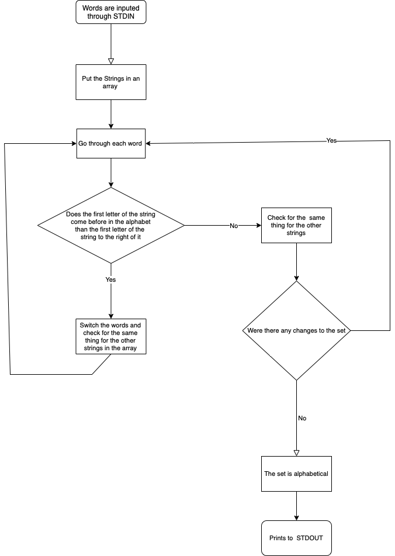

A team project done using GitHub and Swift, in collaboration with Srijishnu Devarapalli, Brayden Edington, and Md Raeed.
Our group created a simple bubble sort algorithm in Swift. We then went and made 3 revisions to improve our sort time, making considerable progress with every revision. We ended with a time we are quite proud of for our first algorith. Our flow chart is pictured below.
Google Sheets

The results of the Sort Analysis project and its tests provide a fascinating insight into the pros and cons of several sorting algorithms. However, some general trends are shown throughout the graphs. Throughout the tests, insertion sort and selection sort both perform at similar levels. However, Bubble Sort usually lags in execution speed, for example, on test 12, where all the different algorithms have to sort a reverse-ordered list containing 100,000 words. Bubble Sort lags behind both Selection Sort and Insertion Sort; Test #14 shows a trial where both Selection Sort and Insertion Sort finish within the time limit, however, Bubble Sort results in a Core Dump error. A core dump error means that the algorithm was unable to complete the sort within the 5-minute time limit. A trend between all the sorting algorithms was that they required exponentially increasing amounts of time as more and more words need to be sorted.
Bubble Sort when compared to both Selection and Insertion Sort performs extremely poorly, this can be seen throughout the trials and be explained by the fact that it’s a much simpler algorithm, especially when compared to the other tested algorithms. For example, Bubble Sort in trial 12 sorted 100,000 words in reverse order in 1 minute and 24 seconds, while Selection Sort finishes in a much faster 1 minute and 12 seconds, and Insertion Sort manages to finish in 1 minute and 16 seconds. While this 12 and 8-second difference may seem trivial, under more intense loads, the efficiency can snowball and become a much larger difference. On top of this, Bubble Sort regularly fails some sorts that the other algorithms manage to get done within the time limit.
Another trend was a relationship between the time taken to sort as a larger word base needs to be sorted. The graphs display, 10 words usually take less than a third of a second, 100 words also take less than a third of a second, but 1,000 words take almost a second, 10,000 words take more than a minute, and 100,000 words take more than 5 minutes and causes a system error on some algorithms.
In conclusion, Insertion Sort and Selection Sort both perform comparatively throughout most tests. Both perform much better than Bubble Sort, especially as the word bank increases. Finally, the larger the word base, the more time it takes for all three sorting algorithms to complete a sort.